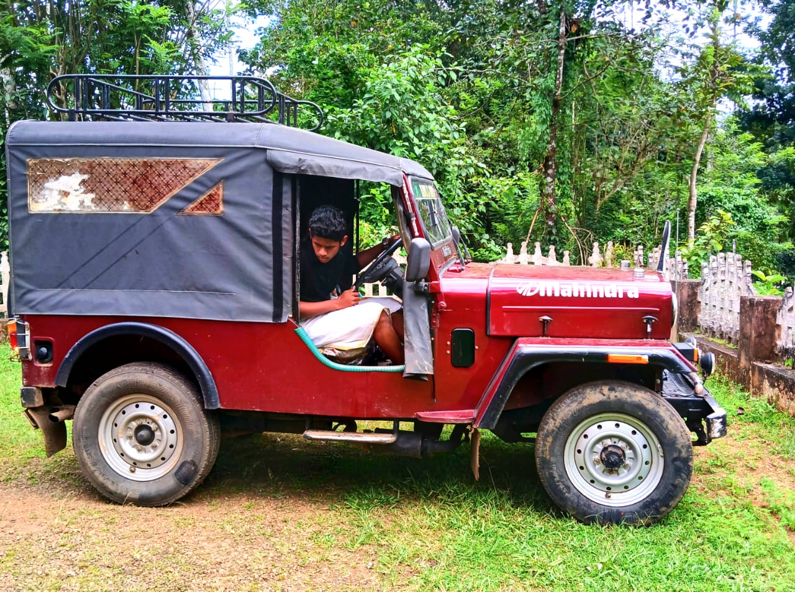
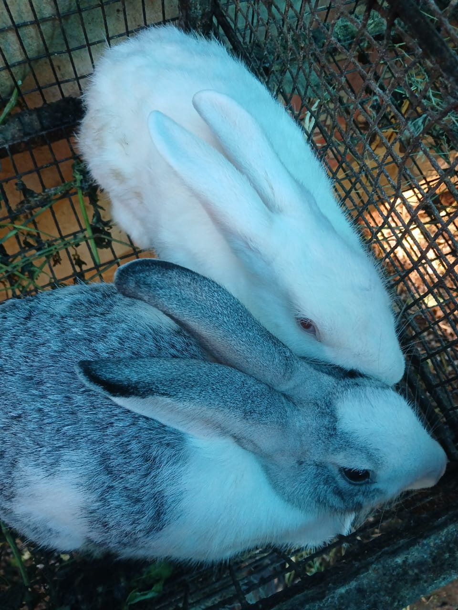
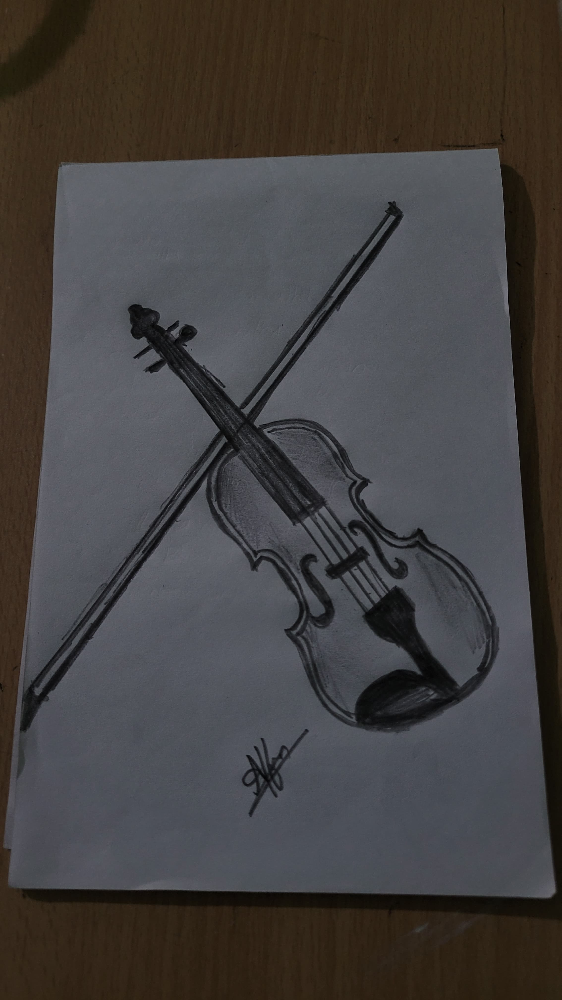
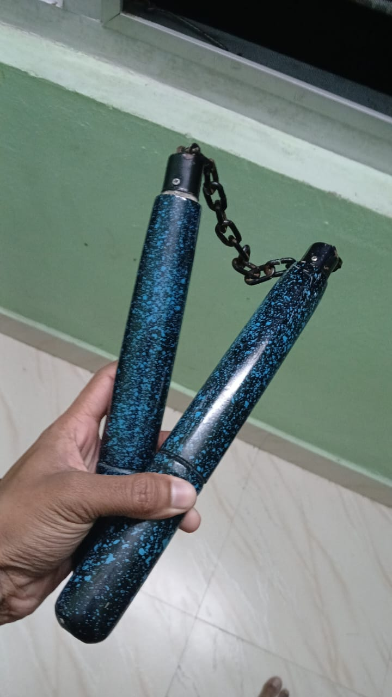

HELLO, I AM
ABOUT ME
Hey, I’m Alfin Mathew Vincent, a beginner web designer with a passion for crafting intuitive and visually appealing websites. As I dive deeper into the world of design and development, I’m constantly expanding my skills in creating user-friendly digital experiences. My journey is fueled by curiosity and a drive to turn ideas into interactive realities. Aside from web design, I’m also a keyboardist and a music lover. Whether I'm building websites or playing melodies, I find joy in blending creativity and technical skills. Music and design share a special harmony in my life, and both help me approach problems with creativity and precision. Let’s connect and create something exciting together!

EDUCATION

1OTH AND PLUSTWO
ST MARYS CENTRAL SCHOOL RANNY
PAZHAVANGADI PO.RANNY
YEARS ATTENDED: 2010-2024
CLICK TO VISIT SCHOOL DETAILS
BACHELOR OF COMPUTER APPLICATION [HONOURS]
MAR ATHANASIOS COLLEGE FOR ADVANCE STUDIES(MACFAST)
THUKALASSERY,THIRUVALLA
COURSE DURATION: 2024 - 2028
CLICK TO VISIT COLLEGE DETAILS
HOBBIES AND INTRESTS
MUSIC
I love playing the keyboard and exploring different genres of music and i likes to hear musics .As a passionate music lover, I find solace and inspiration in the power of melodies and rhythms.

DRIVING
Driving offers a unique sense of freedom and satisfaction. Whether am cruising down an open highway or navigating through city streets, being behind the wheel connects me with the road in a way that feels both empowering and peaceful.

PETS
As a devoted pet lover, my heart finds joy in the companionship of animals. Whether the loyal affection of dogs, the soft,lovable, curious nature of my rabbits,and the serene beauty of my fishes, each pet brings a unique kind of love into my life.

DRAWING
Drawing is a passion that brings out my creativity and imagination. With every stroke of the pencil or brush, i express emotions, ideas, and perspectives that words often can't capture.

CYCLING
Cycling is more than just exercise for me—it's a daily adventure that brings joy and vitality into my life. With my trusty Rockrider ST50, I hit the road every day, covering 15 kilometers with a sense of purpose and excitement.

MARTIAL ARTS
I am passionate about karate and have successfully achieved my purple belt. Along with mastering various techniques, I also specialize in using the nunchaku, a traditional martial arts weapon that adds an exciting dynamic to my practice.
PHOTO GALLERY


.jpeg)


CONTACT ME
To learn more about being featured, get in touch - we'd love to hear from you!
- City, State
- 8590539196
- vincentalfin60@gmail.com